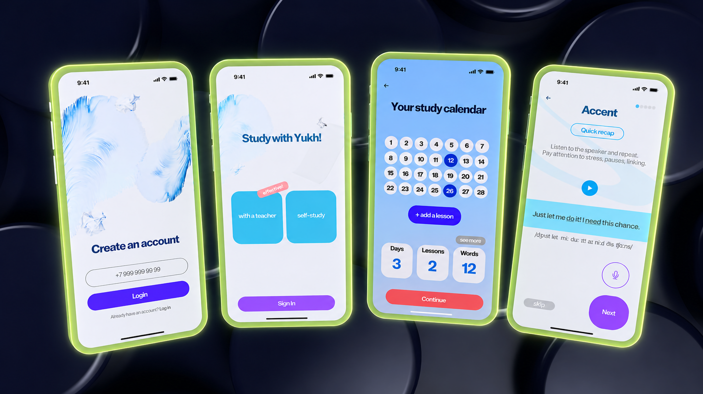
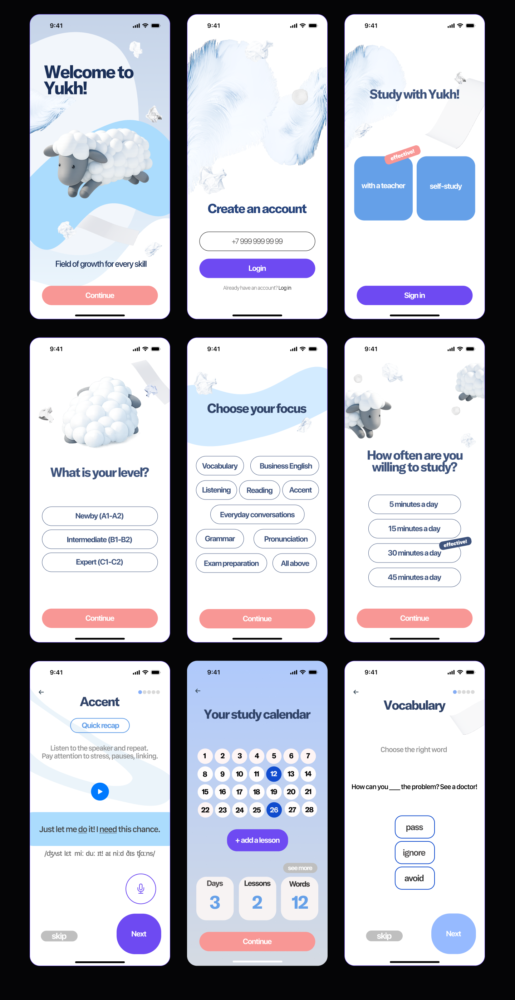
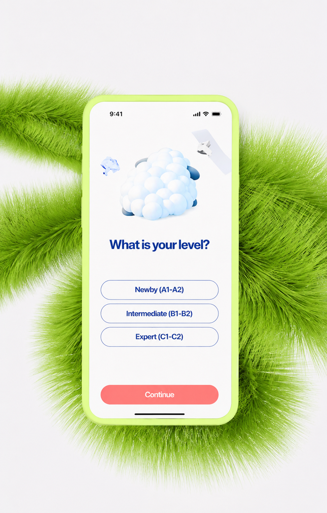
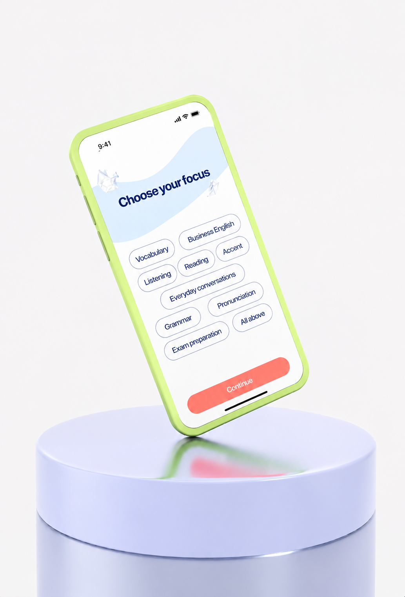

Миссия
Убрать иллюзию обучения и заменить ее структурой и реальным результатом.
Дизайн вошел в топ-20 по результатам отбора в Студии Артемия Лебедева. После собеседования пригласили на стажировку. Проект сделан за 72 часа. Полная версия доступна на сайте Студии Лебедева.
Задача — разработать приложение для изучения английского языка.

Дизайн-концепция для всех экранов. Ключевой — тренировка интонации с записью голоса.

Персонаж и элементы в Cinema 4D + Arnold: овечка, листы
и смятая бумага, шерсть.


Провела анализ контента и несколько глубинных интервью. Главные боли — бессистемность материала и невозможность выбрать, над каким разделом языка работать.
Сделала ставку на все аспекты языка, включая говорение. Главные трудности — страх быть непонятым и логическое ударение в предложении.
«A field of growth
for every English skill»
Сначала определила ценности и сформулировала миссию, затем — видение продукта и метафору, которая связывает все вместе.
Убрать иллюзию обучения и заменить ее структурой и реальным результатом.
Целостный путь изучения английского, в котором развиваются все языковые навыки.
Бесконечное «поле», где каждый навык английского получает пространство для роста.
Cinema 4D (Arnold), Figma, Photoshop